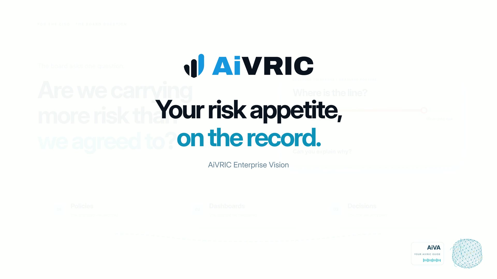

For the CISO · risk governance · AiVRIC Enterprise VisionYour risk appetite, on the record.
Declare your risk appetite, measure every tolerance against live posture, publish policy generated from the controls you run, weigh each decision against the line you set, and report to the board the same way every quarter. All of it in AiVRIC Enterprise Vision, where the work already lives.

Screens rebuilt from the Big Venture Incorporated demo workspace in Enterprise Vision. All figures are sample data.
What the board holds you to
One line for risk. Every decision measured against it.
The CISO owns the line: how much risk the organization will carry, area by area. Policy, treatment decisions, metrics and the board report all answer to it. Enterprise Vision keeps each of them on the record, in the same workspace as the findings and controls they are measured against.
Without a system of recordIn Enterprise Vision
Risk appetiteA slide from the offsiteDeclared area by area, calculated, on the record
DecisionsEmail threadsWeighed against tolerance, justified above it
PolicyA template, edited onceGenerated from your controls, versions frozen
Board reportRebuilt every quarterA frozen snapshot, the same numbers every time
How the program runs in Enterprise Vision
Seven words, one record.
Minimaloverall appetite, calculated from 12 declared tolerance areas
1,713actively exploited items, measured against an Averse ransomware tolerance
0 → 12controls carrying a policy statement after one standard was published
37KRIs and KPIs the board can hold the program to, 6 derived live
Figures from the Big Venture Incorporated demo workspace (sample data), Sep 24–25, 2026.
Free tool · risk appetite statement
Build your risk appetite statement in two minutes.
Pick a tolerance for each area. The overall appetite is calculated the way Enterprise Vision does it: the median of what you declare, never typed in. Your choices stay in this browser.
Your first 90 days in Enterprise Vision
Day 30. Day 60. Day 90.
Day 30Foundations
- Risk appetite workshop with leadership
- Information security policy set, v1 published
- Metrics baseline recorded
Day 60Operate
- Treatment decisions weighed against tolerance
- Third-party review cycle
- Incident response tabletop exercise
Day 90Report
- First board report, frozen
- Remediation roadmap for the next 90 days
- Master policy and standards compilation
Information security policy
Your information security policy, generated. Not templated.
Skip the IT security policy template. Enterprise Vision generates family standards from the controls you actually run, cross-walked to the frameworks you answer to, next to the plain-English enterprise policy every employee acknowledges. Approved versions are published and frozen, so the document a customer or auditor received stays reproducible.
SOC 2 — TSC 2017ISO 27002:2022EU GDPR
- Our commitment to information security
- Acceptable use of technology
- Accounts, passwords and sign-in
- Protecting information
- Email, messaging and phishing
- Working remotely and on the move
- Reporting security incidents
- Third parties and cloud services
- Physical security
- Training and acknowledgement
Run it in AiVRIC Enterprise Vision
Your program, in your own workspace.
What you run
The CISO’s record, end to end.
- Declare risk appetite and see it measured against live posture
- Generate, approve and publish policy and standards
- Record decisions and metric readings on the record
- Freeze a board report whenever you need one
Where it runs
Your deployment, your record.
- SaaS, self-hosted or air-gapped, with EU data residency available
- Single tenant: your data in your own workspace
- Named users only, with single sign-on and MFA at your identity provider
- Every control, decision and action on an append-only audit trail
Questions
What CISOs ask first.
What is a risk appetite statement?
A short statement from leadership on how much risk the organization will accept, area by area: regulatory, ransomware, data protection, third parties and so on. It gives every later decision a line to be measured against. Use the builder on this page to draft yours.
How is the overall appetite calculated?
It is the median of the tolerances leadership declares across the areas, never typed in, so no single area quietly sets the line for the whole organization. When the spread between areas is wide, Enterprise Vision flags it for a board review.
How is tolerance measured?
Each declared tolerance is compared with live posture from your scans, registers and threat intelligence. Where measured exposure sits above the line, the area shows as exceeding it, and a decision to accept that risk needs a written justification on the record.
Does it write our information security policy?
It generates family standards from the controls in your baseline, cross-walked to frameworks such as SOC 2, ISO 27002 and GDPR, alongside the plain-English enterprise policy. You approve and publish; published versions are frozen, so what a customer or auditor received can always be reproduced.
What does the board see?
A frozen ROAR snapshot: posture, findings, risks, the remediation roadmap and trends, as a print-ready report with the same numbers every time it is shown. GROC adds the governance view and the KRIs and KPIs you report against.
Where does it run?
SaaS, self-hosted or air-gapped, with EU data residency available. Each workspace is single tenant, with named users signing in through single sign-on and MFA at your identity provider, and every action on an append-only audit trail.
Your risk appetite, on the record.
See your program in AiVRIC Enterprise Vision. Bring your questions, and we’ll walk you through appetite, policy, decisions and the board report on real screens.
Screens show sample data from a fictitious demo workspace.